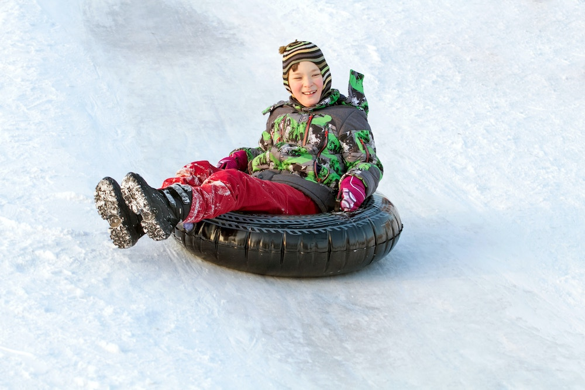

Tubing at The Summit of Mount Lemmon is an incredible experience! The ride begins at the top of the mountain, where you can appreciate the breathtaking views of the surrounding area. The tubing runs are wide and open, allowing you to take in the beauty of the mountain from every angle. As you slide down the mountain, you can feel the wind in your hair and the sun on your skin. The experience is exhilarating and exciting, and you may even get to experience a few bumps and turns along the way. When you reach the bottom of the tubing run, you can take a break and relax in the sun with a picnic lunch or have some hot cocoa. After a day of tubing, you can take a scenic drive to the summit and take in the stunning views of the surrounding mountain peaks. Tubing at The Summit of Mount Lemmon is an unforgettable experience that is sure to provide you with memories to last a lifetime.
